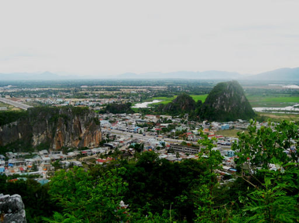

-
Ngũ Hành Sơn - Đà Nẵng
Vị trí: Ngũ Hành Sơn thuộc phường Hoà Hải, quận Ngũ Hành Sơn, cách trung tâm thành phố Đà Nẵng khoảng 7km về phía đông nam. Nói đến du lịch Đà Nẵng là nói đến Ngũ Hành Sơn. Đây là địa điểm du lịch trở thành biểu tượng của thành phố Đà Nẵng từ xưa đến nay. ngu hanh son Khu du tích Ngũ Hành Sơn Đà Nẵng Ngũ Hành Sơn là năm ngọn núi đá (Kim sơn, Mộc sơn, Thủy sơn, Hỏa sơn và Thổ sơn) trông giống như những hòn non bộ nổi lên giữa một cồn cát đá mênh mông, quanh năm sóng vỗ dưới chân. Đến Ngũ Hành Sơn, du khách thường đến ngọn núi lớn Thủy Sơn, chùa Tam Thai, các hang động Huyền Không, động Linh Nham, động Vân Thông, động Lăng Hư, động Vân Nguyệt… Dưới chân Ngũ Hành Sơn có làng đá mỹ nghệ Non Nước với những tác phẩm nghệ thuật điêu khắc bằng đá được bàn tay các nghệ nhân địa phương cần cù tạc nên. Không gian huyền ảo, thơ mộng, chùa chiền và hang động, cây cỏ và tiếng chuông chùa, sóng vỗ và những dằng dặc nghìn trùng... cách không xa trung tâm thành phố, địa điểm du lịch Ngũ Hành Sơn - Đà Nẵng thật sự là một cõi thiên thai dành cho du khách.
Bán Đảo Sơn Trà - Đà Nẵng
.png)
Địa điểm du lịch Đà Nẵng - Bán Đảo Sơn Trà là một đặc ân mà thiên nhiên đã hào phóng ban tặng cho Đà Nẵng. Đứng bất cứ ở đâu trên đất Đà Nẵng đều có thể nhìn thấy ngọn núi này. Trong dáng nhoài người vươn ra biển, địa điểm du lịch Đà Nẵng Sơn Trà là một bức bình phong khổng lồ che chắn bão giông cho thành phố. ban dao son tra Địa điểm du lịch Bán Đảo Sơn Trà nhìn từ trên cao Được mệnh danh là cánh rừng già duy nhất ở Việt Nam nằm trong lòng TP Đà Nẵng, bán đảo Sơn Trà được ví như viên ngọc quý của Đà Nẵng khi có diện tích 4.439ha, đỉnh cao nhất là 696m, chỗ rộng nhất khoảng 6km cùng chu vi khoảng 50km. Đến địa điểm du lịch bán đảo Sơn Trà, bạn có thể trải nghiệm nhiều cảm xúc từ lên rừng đến xuống biển, khám phá những sinh vật quý hiếm. Chắc chắn du khách đến du lịch Đà Nẵng sẽ không thể nào quên nổi cảm xúc khi được đặt chân đến địa điểm du lịch Đà Nẵng thú vị này.
Núi Chúa - Bà Nà
.png)
Địa điểm du lịch Đà Nẵng - Bà Nà Núi Chúa là một dãy núi thuộc huyện Hòa Vang cách Đà Nẵng 40 km về phía Tây Nam. Ở địa điểm du lịch Đà Nẵng Bà Nà, du khách sẽ cảm nhận được bốn mùa riêng biệt trong một ngày: sáng – xuân, trưa – hạ, chiều – thu, tối – đông. ba na hill Địa điểm du lịch Bà Nà - Núi Chúa lung linh trong mây Vượt qua đoạn cáp treo dài và dốc đạt những kỷ lục thế giới, từ trên đỉnh núi, du khách có thể bao quát cả một không gian mênh mông: biển cả, thành phố Đà Nẵng, những cánh đồng lúa xanh đến tận chân trời… Đến đây, bạn không nên bỏ qua những địa điểm như: chùa Linh Ứng với bức tượng Đức Bổn Sư cao 27m, Suối Mơ nước trong vắt, mùa hè có ngọn thác Tóc Tiên hay khu vui chơi trong nhà Fantasy Park. Xem thêm: Kinh nghiệm du lịch Đà Nẵng - Bà Nà: lựa chọn phương tiện di chuyển
Đèo Hải Vân
.png)
Địa điểm du lịch Đà Nẵng - Đèo Hải Vân dài 20km, nằm ở giữa địa giới tỉnh Thừa Thiên Huế và thành phố Đà Nẵng. Với độ cao gần 500m so với mực nước biển, địa điểm du lịch đèo Hải Vân nổi tiếng là đường đèo đẹp nhất và cũng hiểm trở nhất Việt Nam. deo hai van Địa điểm du lịch Đèo Hải Vân Từ địa điểm du lịch Đà Nẵng này, những phong cảnh ấn tượng về dải bờ biển tuyệt đẹp của Đà Nẵng, Huế sẽ hiện ra. Đó là làng chài Lăng Cô đẹp như tranh vẽ, thành phố Đà Nẵng hiện đại bên bờ sông Hàn, đỉnh Sơn Trà quanh năm mây phủ, dải cát trắng phau của bãi biển Non Nước, những tảng đá chênh vênh của Ngũ Hành Sơn… Hiện nay dù đã có hầm đường bộ Hải Vân, nhiều du khách vẫn cất công vượt đường đèo trắc trở với núi cao, vực sâu để được tận mắt ngắm nhìn những cảnh đẹp như tranh vẽ ấy.
Chùa Linh Ứng - Bãi Bụt
.png)
Địa điểm du lịch Đà Nẵng - Chùa Linh Ứng Bãi Bụt nằm tựa lưng vào đỉnh Sơn Trà vững chãi, được xem là ngôi chùa lớn nhất ở thành phố Đà Nẵng cả về quy mô cũng như kiến trúc nghệ thuật. Điện chính có sức chứa lớn, là nơi trang nghiêm và thanh tịnh nhất. Chính giữa là tượng Phật Bổn Sư Thích Ca Mô Ni, bên phải là Quan Thế m Bồ Tát, và bên trái là Tam Tạng Phật, bốn vị Thần Long Hộ Pháp cùng 18 vị La Hán được sắp xếp theo một quy luật, bảo vệ cho chính điện. chua linh ung Địa điểm du lịch Chùa Linh Ứng - Sơn Trà Chùa Linh Ứng Bãi Bụt được xây dựng trên khu đất rộng 12ha ở bán đảo Sơn Trà. Ngôi chùa được xây dựng kết hợp hài hòa giữa kiến trúc thanh tân và truyền thống kiến tạo thẩm mỹ cổ truyền Á Đông. Đặc biệt, tại chùa Linh Ứng Bãi Bụt có tượng Phật Quan Thế m được xem là cao nhất Việt Nam (cao 67m, đường kính tòa sen 35m). Tượng đứng tựa lưng vào núi, hướng ra biển, đôi mắt hiền từ nhìn xuống, một tay bắt ấn tam muội, tay kia cầm bình nước cam lộ như rưới an bình cho những ngư dân đang vươn khơi xa. Trên mão tượng Quan m có tượng Phật Tổ cao 2m. Trong lòng tượng có 17 tầng, mỗi tầng đều có bệ thờ tổng cộng 21 bức tượng Phật với hình dáng, vẻ mặt, tư thế khác nhau, gọi là “Phật trung hữu Phật”. Du khách khi du lịch Đà Nẵng, chắc chắn phải ghé thăm địa điểm du lịch Đà Nẵng này để có thể chiêm ngưỡng hết vẻ đẹp của Đà Nẵng từ trên cao dù là ban ngày hay ban đêm.
Bảo tàng nghệ thuật điêu khắc Chămpa Đà Nẵng
.png)
Địa điểm: số 02, đường 2-9, Thành phố Đà Nẵng Bảo tàng Nghệ thuật Điêu khắc Chăm Đà Nẵng là bảo tàng trưng bày hiện có quy mô lớn nhất ở Việt Nam, trực thuộc Bảo tàng Đà Nẵng. Đây là bảo tàng do người Pháp xây dựng, chuyên sưu tập, cất giữ và trưng bày các di vật nghệ thuật điêu khắc của vương quốc Chăm. Bảo tàng được xây dựng theo lối kiến trúc Gothic, hiện có tổng diện tích gần 6.700 m2, trong đó phần trưng bày rộng 2.000 m2, với tổng số hiện vật khoảng 500 mẫu, trưng bày theo bản đồ phát hiện, gồm phòng Mỹ Sơn, Trà Kiệu, Đồng Dương, Tháp Mẫn và các hành lang Quảng Trị, Quảng Nam, Quảng Ngãi, Kon Tum, Quảng Bình và Bình Định. bao tang cham Địa điểm du lịch Bảo Tàng Champa Các mẫu vật cổ đang trưng bày ở địa điểm du lịch này gồm các phù điêu trang trí, đài thờ, tượng… bằng chất liệu sa thạch, đất nung, được thu thập từ những đền tháp Chăm ở nhiều vị trí khai quật tại miền Trung. Du khách đến thăm quan sẽ được chiêm ngưỡng nhiều cổ vật giá trị như tượng thần Ganésa mình người đầu voi, những nữ thần Apsara được chạm khắc tinh tế… Vé vào cổng: - Người lớn: 40.000 đồng/người - Học sinh, Sinh viên: 5000 đồng/người - Trẻ em dưới 16 tuổi: miễn phí.
Các bãi biển du lịch Đà Nẵng
.png)
Đến du lịch Đà Nẵng, tắm biển là hoạt động không thể bỏ qua được. Hệ thống bãi biển bờ Đông thành phố Đà Nẵng là những địa điểm du lịch Đà Nẵng tuyệt đẹp mà du khách vừa có thể tắm biển vừa trải nghiệm những trò chơi thể thao dưới nước cực kỳ thú vị. bai bien da nang Khám phá bãi biển du lịch Đà Nẵng xinh đẹp Bãi biển Mỹ Khê: Bãi biển Mỹ Khê của Đà Nẵng đã được tạp chí Forbes (Mỹ) bình chọn là một trong 6 bãi biển quyến rũ nhất hành tinh. Bãi biển Phạm Văn Đồng: Đây là bãi tắm công cộng Đà Nẵng được xây dựng với kinh phí 12 tỉ đồng, là địa điểm thu hút cư dân địa phương và khách du lịch khắp nơi. Vị trí: Thuộc phường Phước Mỹ, quận Sơn Trà, tại công viên biển Đông. Tại địa điểm du lịch Đà Nẵng này, có diễn ra nhiều hoạt động vui chơi thể thao cảm giác mạnh thu hút du khách. Bãi biển Bắc Mỹ An: là một bãi tắm ở phường Bắc Mỹ An, Quận Ngũ Hành Sơn, Đà Nẵng. Cát trắng mịn và nước trong xanh với nhiệt độ ít chênh lệch quanh năm là ưu điểm của bãi tắm này.
Những cây cầu có kiến trúc ấn tượng
.png)
Đà Nẵng từ lâu đã được mệnh danh là thành phố của những cây cầu. Những cây cầu ấn tượng, ghi được những kỷ lục khiến người dân Đà Nẵng tự hào mà khách du lịch khắp nơi phải trầm trồ. thanh pho cua nhung cay cau Những cây cầu độc đáo làm nên thương hiệu du lịch Đà Nẵng Cầu Sông Hàn: là cây cầu quay duy nhất tại Việt Nam hiện nay, biểu tượng của du lịch Đà Nẵng. Hàng ngày, phần giữa cầu sẽ quay 90 độ quanh trục vào lúc 0h30, mở đường cho tàu lớn qua, và quay trở lại như cũ vào lúc 3h30. Cầu Rồng: cầu mới khánh thành năm 2013, nối thẳng trục đường từ sân bay Đà Nẵng ra các bãi biển Mỹ Khê và Non Nước. “Con rồng” trên cầu có khả năng phun lửa và phun nước như thật vào lúc 21h các ngày thứ bảy, chủ nhật và ngày lễ. Cầu Trần Thị Lý: Cầu Trần Thị Lý là cây cầu hiện đại với kiến trúc và kết cấu độc đáo khi sử dụng hệ dây văng 3 chiều kết hợp trụ tháp nghiêng 12 độ về phía tây, cao 145m so với mặt nước biển, gối ngàm cứng độc đáo nhất Việt Nam. Với thiết kế độc đáo, cây cầu như cánh buồm căng gió vươn khơi xa. Cầu Thuận Phước: Cầu Thuận Phước được xem là cây cầu đẹp nhất nước. Với vị trí và kiến trúc có một không hai ở nước ta tại thời điểm hiện tại. Cầu thuận phước như một dải lụa nối hai bờ sông Hàn tại cửa sông. Vẻ đẹp của cầu Thuận Phước càng trở nên lộng lẫy vào ban đêm.
Nhà thờ Con Gà - Đà Nẵng
.png)
Địa điểm: 156 Trần Phú, Đà Nẵng Nhà thờ Con Gà hay nhà thờ Chánh Tòa là một trong những địa điểm du lịch nổi tiếng ở Đà Nẵng. Nhà thờ cao gần 70m, là nhà thờ duy nhất được xây dựng tại thành phố Đà Nẵng thời Pháp thuộc. nha tho con ga Nhà thờ Con Gà Đà Nẵng Địa điểm du lịch này có kiến trúc theo kiểu Gothique với những đường nét cao vút, những vòng cửa quả trám. Bên trong nhà thờ có các tranh ảnh và tượng Chúa minh họa theo thánh kinh bài trí theo dạng mỹ thuật nhà thờ Thiên Chúa giáo phương Tây.
Công viên giải trí Asia Park - Vòng quay Mặt Trời
.png)
Là một địa điểm du lịch và giải trí mới khánh thành vào tháng 7 vừa qua, nhưng vòng quay Mặt Trời nằm trong khuôn viên công viên giải trí châu Á đang trở thành một địa điểm thu hút người dân Đà Nẵng cũng như du khách du lịch. vong quay mat troi Vòng quay Mặt Trời - Địa điểm du lịch Đà Nẵng mới không thể bỏ qua Ngồi trên vòng quay Mặt Trời, du khách có thể đưa tầm mắt ngắm nhìn toàn cảnh Đà Nẵng lung linh về đêm. Vòng quay có thời gian 15p/vòng, bao gồm 64 cabin có thể chở được tối đa 364 người một lượt. Giá vé mỗi người là 50.000đ, dưới 1m được miễn phí. Trên đây chỉ là một trong những địa điểm nổi bật nhất Đà Nẵng hiện nay. Còn rất nhiều địa điểm du lịch Đà Nẵng khác mà cũng thú vị không kém. Nếu có thời gian, du khách hãy tham khảo thêm một số địa điểm du lịch Đà Nẵng trên website Cái Bát Vàng để có thể trải nghiệm được hết vẻ đẹp của thành phố biển Đà Nẵng xinh đẹp. Để thuận tiện cho du khách, Cái Bát Vàng cũng cung cấp những địa điểm thuê xe du lịch Đà Nẵng để du khách dễ dàng tham quan, khám phá Đà Nẵng. Theo kinh nghiệm du lịch Đà Nẵng, nếu chỉ đi du lịch một vài ngày, du khách không thể đi hết tất cả các địa điểm du lịch nổi tiếng tại Đà Nẵng được, do vậy du khách cần chọn lọc ra địa điểm nào mình thích thú nhất và lên kế hoạch du lịch thật kỹ càng để tiết kiệm thời gian, công sức mà có thể đi được nhiều nơi. Chúc du khách có chuyến du lịch Đà Nẵng vui vẻ và thú vị!